Prérequis
- Windows 10 ou Windows 11 (64 bits)
- Un navigateur compatible Chrome : Google Chrome, Microsoft Edge, Arc, Brave…
(nécessaire pour l'extension automatique — voir section 7. Sans navigateur compatible, la clé de session peut être saisie manuellement.) - Un compte Claude.ai actif (abonnement Pro ou Team)
L'application est autonome et embarque toutes ses dépendances (~59 Mo installés).
Contenu de l'archive
L'archive Claude-Win-Monitor-v1.9.1.zip contient :
Avant d'installer — antivirus
L'application est compilée en binaire natif Windows (pas de script Python embarqué).
Vérification indépendante : VirusTotal — Claude-Win-Monitor-Setup.exe
Si vous disposez d'un antivirus, désactivez-le temporairement pendant l'installation, puis réactivez-le et ajoutez une exclusion sur le dossier d'installation (voir section 5).
Installation
4.1 Lancer l'installateur
Double-cliquez sur Claude-Win-Monitor-Setup.exe (~16 Mo).
En survolant le fichier, vous pouvez vérifier ses métadonnées :
Description : Claude Win Monitor Setup — Entreprise : Laurent Gérard — Version : 1.9.1.0
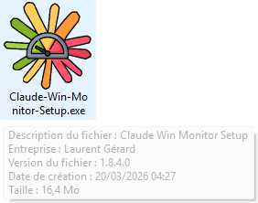
4.2 Alerte SmartScreen (si elle apparaît)
Windows peut afficher un écran bleu "Windows a protégé votre ordinateur".
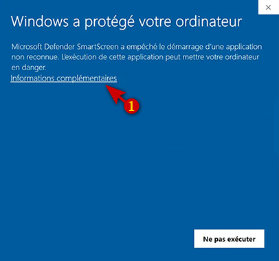
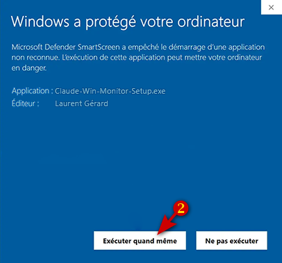
4.3 Étapes de l'assistant
Étape 1 — Dossier de destination
Dossier par défaut : C:\Program Files (x86)\Claude-Win-Monitor (~59 Mo). Modifiable via Parcourir. Cliquez sur Suivant.
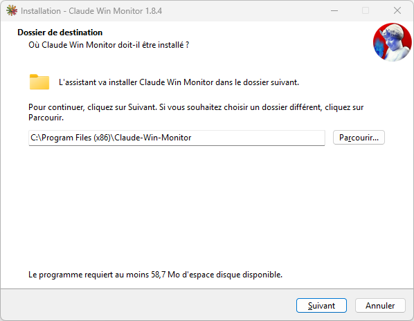
Étape 2 — Dossier du menu Démarrer
Raccourci créé sous Claude Win Monitor. Cliquez sur Suivant.
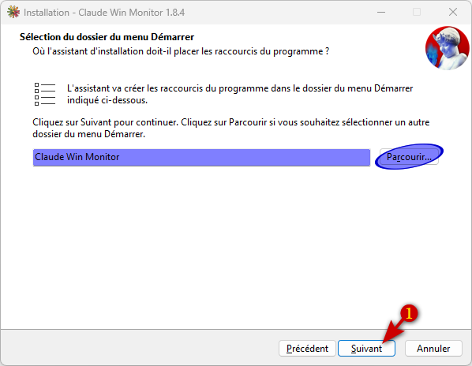
Étape 3 — Prêt à installer
Vérifiez le récapitulatif et cliquez sur Installer.
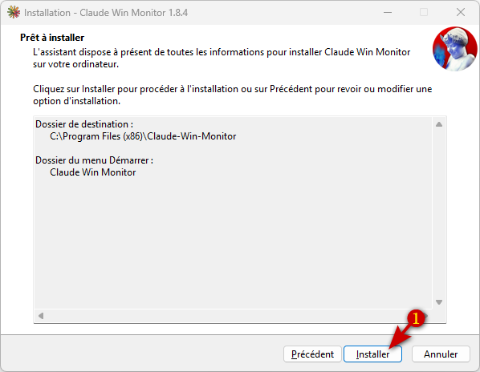
Étape 4 — Fin de l'installation
Laissez Lancer Claude Win Monitor coché et cliquez sur Terminer.
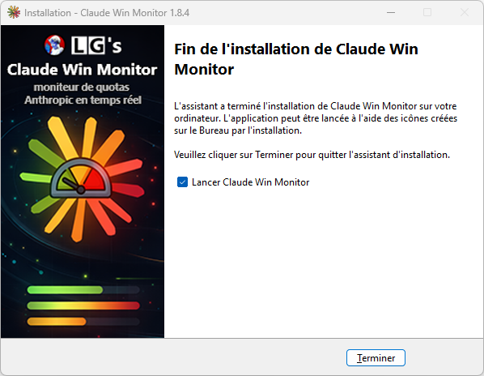
Après l'installation — exclusion antivirus
Réactivez votre antivirus et ajoutez une exclusion permanente :
Chemin à exclure : C:\Program Files (x86)\Claude-Win-Monitor
Claude Win Monitor apparaît dans Paramètres → Applications installées :
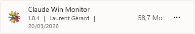
La fenêtre principale
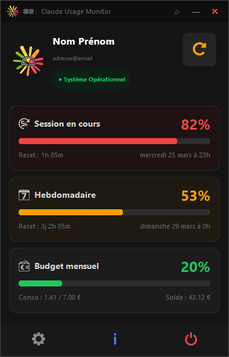
6.1 Barre de titre
- Logo Claude Win Monitor
- Drapeaux de langue — raccourci d'accès rapide aux Paramètres de langue
- Punaise
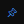
— maintient la fenêtre au premier plan de toutes les autres fenêtres ouvertes - — minimiser / ✕ fermer l'application
6.2 En-tête
- Nom et email du compte Claude connecté
- Indicateur de connexion — badge vert (connexion active) ou rouge (erreur de connexion)
- Bouton Actualiser — force une mise à jour immédiate des quotas
6.3 Les 3 cartes de quotas
Chaque carte affiche le pourcentage d'utilisation et une barre de progression dont la couleur indique le niveau d'alerte :
| Carte | Description | Informations affichées |
|---|---|---|
| Session en cours | Consommation sur les 5 dernières heures glissantes | Temps avant reset + date de reset |
| Hebdomadaire | Consommation sur les 7 derniers jours | Temps avant reset + date de reset |
| Budget mensuel | Montant consommé sur le plafond mensuel | Conso / plafond en devise + solde prépayé |
6.4 Barre du bas
Installation de l'extension navigateur
Pourquoi cette extension ?
Pour afficher vos statistiques, Claude Win Monitor a besoin de vos identifiants de session — une clé temporaire générée par Claude.ai à chaque connexion. L'extension Claude Session Helper la récupère automatiquement depuis votre navigateur et la transmet à l'application, sans aucune intervention de votre part.
7.1 Ouvrir la gestion des extensions
Chrome / Edge / Brave : tapez chrome://extensions dans la barre d'adresse.
Arc : menu navigateur (icône en haut à gauche) → Extensions → Manage Extensions.

7.2 Activer le mode développeur et charger l'extension
03-Extension-Chrome et confirmez
7.3 Vérifier l'installation
L'extension Claude Session Helper apparaît dans la liste, activée.

7.4 Alerte périodique du navigateur
Cliquez sur Ignorer ou Ne plus afficher. L'extension continue de fonctionner normalement.
Premier lancement
8.1 Connexion automatique
Si l'extension est installée et que vous êtes connecté à claude.ai, la connexion s'effectue automatiquement en quelques secondes.
Le badge de l'en-tête passe au vert :
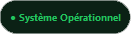
L'application affiche vos quotas en temps réel.
8.2 Connexion manuelle (sans extension)
Si la connexion automatique ne fonctionne pas, le badge indique une erreur :
Dans ce cas, saisissez la clé manuellement :
https://claude.ai → sessionKeyParamètres
Cliquez sur Paramètres pour ouvrir la fenêtre de configuration.
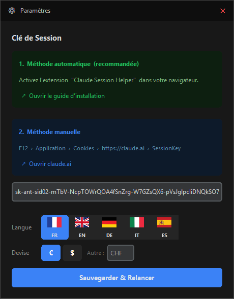
9.1 Clé de session
- Méthode automatique (recommandée) — activez l'extension navigateur, elle gère tout automatiquement. Un lien Ouvrir le guide d'installation est disponible dans la fenêtre.
- Méthode manuelle — suivez le chemin
F12 → Application → Cookies → https://claude.ai → SessionKey. Un lien Ouvrir claude.ai est disponible directement dans la fenêtre.
9.2 Langue
5 langues disponibles — cliquez sur le drapeau souhaité :
9.3 Devise
Choisissez € ou $, ou saisissez un symbole libre (1 à 3 caractères) — ex. : CHF, £, ¥.
9.4 Sauvegarder
Cliquez sur Sauvegarder & Relancer — l'application redémarre automatiquement avec les nouveaux paramètres.
Fenêtre Informations
Cliquez sur Informations pour afficher la version installée, la date de build et le lien vers l'auteur.
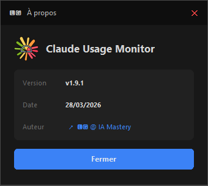
Icône dans la barre des tâches
Claude Win Monitor s'exécute en arrière-plan avec une icône dans la zone de notification (coin inférieur droit de l'écran).
11.1 Icône masquée ?
Windows peut masquer l'icône dans le sous-menu ^ des icônes cachées. Pour l'afficher en permanence :
Paramètres → Personnalisation → Barre des tâches → Autres icônes de barre d'état système
→ activez Moniteur de quotas Claude en temps réel
11.2 Utilisation de l'icône tray
- Survol — affiche le pourcentage de session en cours sans ouvrir la fenêtre
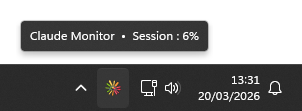
- Clic gauche — bascule la fenêtre au premier plan
- Clic droit — menu contextuel : Afficher / Actualiser / Quitter
Mise à jour
Claude-Win-Monitor-Setup.exeLa clé de session et les paramètres sont stockés dans
%LOCALAPPDATA%\Claude-Win-Monitor\, un dossier séparé que l'installateur ne touche jamais.
Désinstallation
Votre configuration est conservée dans C:\Users\[votre nom]\AppData\Local\Claude-Win-Monitor\.
Supprimez ce dossier manuellement pour une désinstallation complète.